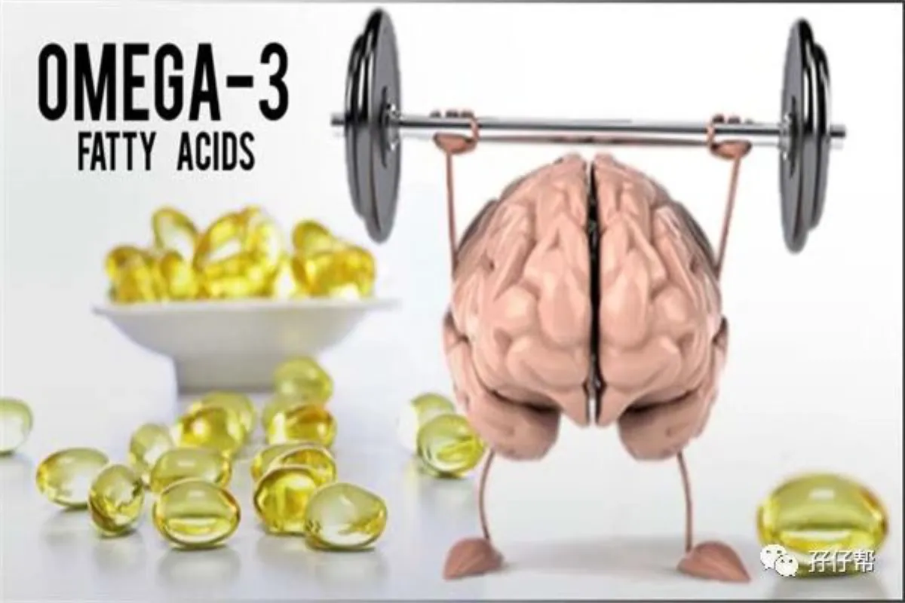
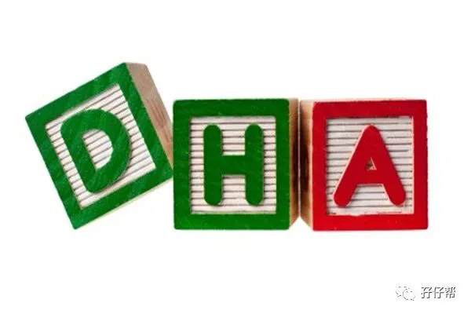
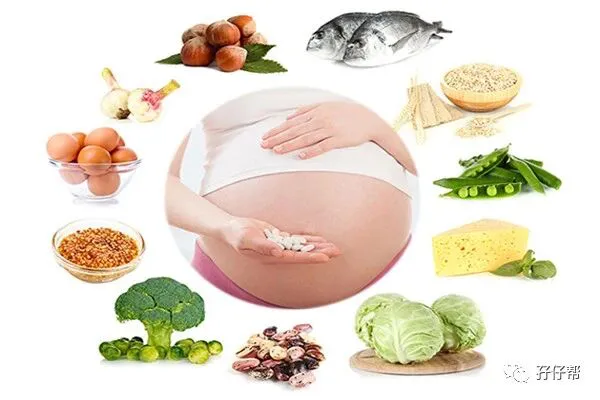
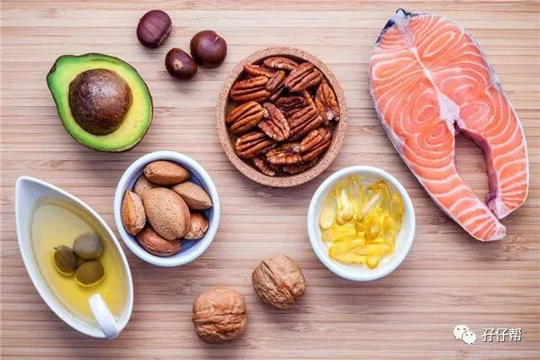

⬆⬆关注孖仔帮，与您分享双胞胎育儿经⬆⬆
本文来源网络，版权归原作者所有，如有侵权请联系删除。
图|来自网络
· 正 · 文 · 来 · 啦 ·
“圆圈妈，你孕期有吃过DHA吗？”
“圆圈妈，DHA品牌有推荐的吗？”
“圆圈妈，怀双胞胎，DHA要吃双份吗？”
常有孕妈问我关于DHA的问题，如以上…
我发现我孕期真的亏待了自己，除了一日三餐和日常的水果零食，基本上没吃过任何“补品”，甚至孕妇必吃的钙片都 “半片未沾”，补血的铁剂也是在孕中期发现贫血了才舍得买来吃几片，更别说DHA！
所以，我特别怀疑圆圈兄弟出生时的5斤2/5斤3体重是怎么来的。
每次看见双胞胎孕期群的准妈妈在热烈讨论DHA的品牌时，我就一脸懵逼，纳尼？DHA是什么鬼？为什么我现在才知道？
因此，孕妈问我的关于DHA问题，实在回答不了。
BUT,无意中在微博上看到@美国妇产科医生的文章《孕妈妈如何补充DHA》，说得非常详细具体，主要是看完后终于知道，我究竟要不要吃DHA？怎么吃？吃多少合适？
以下文章来源于微博@美国妇产科医生的文章《孕妈妈如何补充DHA》
什么是DHA
DHA是一种脂肪酸的简称，它的全名是“二十二碳六烯酸”（结构简式C22:6，ω-3），就问你带劲不带劲，整个碳链长度比我的秋裤都长！孕期之所以会更关注DHA，因为它长相奇特且大智若愚，分子结构中不仅碳链最长、双键最多，而且具有重要的生理功能，与胎儿的神经发育（大脑）和视力形成（视神经）有着密切联系。
DHA是构成胎儿脑组织的重要成分之一。婴儿大脑含60%脂肪，其中20%是ω-3 脂肪酸（主要是DHA+EPA）。研究表明，孕期和哺乳期若能摄入充足的DHA，那么对宝宝的精神、视力和免疫系统发育以及长期的认知能力都有好处。在这方面，科学家确实没说假话，DHA真的很关键。
DHA肩负着如此重任，世界各国自然都会建议孕妇在孕期和哺乳期加以补充。
世界卫生组织（WHO）和联合国粮农组织（FAO）联合脂肪专家委员会建议，孕妇每天DHA和EPA的摄入总量为300毫克，其中DHA至少200毫克[1]；美国国家科学院医学研究所（IOM）推荐每天摄入DHA160毫克[2]；最新版的《中国居民膳食营养素参考摄入量速查手册（2013版）》推荐孕期每天DHA和EPA的摄入总量为250毫克，其中DHA至少200毫克[3]。
需要补DHA吗？
在讨论到底要不要补DHA之前，首先要看你缺不缺。如果摄入量足够，并不缺乏DHA，那就不用补。但是如果不够，就得考虑补了。
2004年的一项膳食调查发现，中国孕妇群体每天DHA的平均摄入量为11.83毫克～55.30毫克，内陆地区的摄入量显著低于河湖和沿海地区的摄入量，最新的调查显示，目前中国成年人每天摄入的DHA和EPA总量平均只有37.6毫克，远低于上述推荐量。这表明，我国成年人的DHA摄入量不容乐观，对于女性来说，在孕期就更加需要重视。
因此，《中国孕产妇及婴幼儿补充DHA的专家共识》认为：机体维持适宜的DHA水平，有益于改善妊娠结局、婴儿早期神经和视觉功能发育，也可能有益于改善产后抑郁，以及婴儿的免疫功能、睡眠模式等。合理的膳食有助于孕产妇维持DHA水平，以利母婴健康。
如何获得DHA？
简单来说，就是“以吃为主，以补为辅”。
中国的营养学会建议孕产妇在孕期及哺乳期每日摄入的DHA不少于200毫克，可以通过膳食来加强。
鱼类和海鲜是DHA的重要来源，如黄花鱼、沙丁鱼、鲈鱼、金枪鱼、鲇鱼、鲫鱼、带鱼等鱼类，以及虾、海蟹、贝类、墨鱼等海鲜，它们都富含DHA。
其中，100克带鱼和大黄花鱼分别含有80毫克和90毫克DHA，正儿八经吃两口这个，一天所需的量就够了，但请一定吃熟的。这里多嘴说一句刺身的事儿，如果不能保证食物来源和卫生状况，最好不要在孕期生吃。
食用富脂海产鱼时，也要考虑可能的污染物情况。
美国食品和药物管理局（FDA）推荐孕妇在孕期每周吃鱼300克～400克，应尽量避免吃汞含量较高的鱼。哪些鱼的汞含量较高呢？自然是处于食物链顶端的那些，比如鲨鱼什么的……
除鱼虾类外，其他食物中的DHA含量都很少。
不过，直接含量少不要紧，只要有足够的DHA原料就可以。比如食物中的α-亚麻酸在体内可以部分转化为DHA，含α-亚麻酸最丰富的食物是亚麻籽油和紫苏籽油，含量高达50%～60%。
因此，如果想获取充足的DHA，孕期可在食用油多样化的基础上，适当增加一部分亚麻籽油或紫苏籽油。不过，还是应当以食用鱼虾类为主，因为α-亚麻酸的转化率只有1%左右。
遗憾的是，很多人很难通过膳食结构的调整来满足每天DHA的足量摄入，这时，可能就得依靠DHA补充剂了。
是否要吃DHA补充剂？
市面上有各种各样的DHA补充剂，如种类繁多的DHA鱼油。孕期到底要不要吃呢？
鱼类和海鲜依然是最好、最值得推荐的DHA来源。
它们不但含有DHA，还提供优质蛋白、维生素A、铁、锌等微量营养素，是孕期膳食结构的重要组成部分。如果可以，还是应该尽量通过食物来获得所需的DHA。根据《中国居民膳食指南》的建议，孕中期和孕末期每天应摄入50克～100克鱼虾类[7]。
不过，这并不意味着DHA补充剂毫无用处。
孕产妇在孕期和哺乳期每天摄入DHA的最大上限为1 克，只要正常服用合格的产品，DHA补充剂还是较为安全的。对于担心自己每日DHA摄入量不足的人来说，可以适当进行补充。
是否要吃DHA补充剂，还要视每个人具体情况而定。
对于某些孕妇来说，吃鱼可能并不是一件很容易的事情，比如有些人孕吐反应比较严重，还有些人不是很爱吃鱼。在这样的情况下，服用DHA补充剂简单快捷。
总结
NEW
﹀
﹀
﹀
1.DHA的最佳来源是食物
包括各种鱼类等水产品，以及亚麻籽油等。如果条件允许，请尽量通过合理的饮食满足人体对DHA的需要。自孕中期（第13周）开始，孕妇应保证食谱中平均每天有50克～100克鱼虾类。
2.在食物摄入不足的情况下，可以通过补充剂适量补充。
如果仅靠食物无法提供足够的DHA，不妨在医生或者营养师的指导下适量补充可靠的鱼油、海藻油等补充剂。
具体的时间是怀孕20周～28周左右
要求是“可以选择”，不是“必须选择”。毕竟，这是一种比较方便的方法，而且较为安全，只要合理服用就不会有风险。至于每天什么时候服用并没有特殊要求，依据个人情况而定即可。
---☜✪ The end ✪☞---
关于这个号
谢谢关注！我是圆圈妈
85后，全职双胎妈妈
家有孖仔两枚，圆圈&圈圈
双胞胎育儿公众号：孖仔帮
ID:twinsbang
旨意分享双胞胎育儿经验帮助双胞胎家庭
有经验可循
有组织可靠
希望我的经验对您有所启发
期待与您一起共享双胞胎育儿经
孖仔帮目前有5个微信社群
孕期群，喂养群，闲置群
双胞胎爸爸专属群，双胞胎专属教育群
如需入交流群
请+圆圈妈的微信号sgguy-com
或扫描下方二维码
由圆圈妈邀请入群
添加请注明：
宝妈/宝爸，孕期/已生
长按二维码加圆圈妈好友
往期精彩文章回顾：
105：同卵双胞胎的天敌--双胞胎输血综合征
106：官宣：双绒双羊，单绒双羊，单绒单羊傻傻分不清？一篇消除你所有疑问
215：双胎子宫日记系列|（下）你看不看？双胞胎妈妈直播剖腹产全过程
219：双胞胎准爸爸的生存指南：不做猪一样的队友，活着出来喜当爹
306：真人示范！双胞胎妈妈高难度喂母乳技巧
312：为出生就进NICU的双胞胎新生儿，我必须告诉你这5个通关秘籍
407：嘿！双胞胎孩子的亲子阅读攻略，要来一份吗（1--2岁阶段）
605：看过这份最简单的双胞胎宝宝用品囤货清单，其他的都是将就
608：听说...你在找双胞胎育儿神器，这事儿我熟！
723：双胎妈妈，为什么我不建议你这样坐月子...
我猜你肯定喜欢看上面的文章，对不对嘛？关注孖仔帮，回复文章前面的数字编号即可阅读。
长按识别二维码关注我们
更多孖仔帮双胞胎原创育儿文章，
请猛戳 "阅读原文"
或者直接上圆圈妈的个人博客。
博客链接↓↓
https://www.sgguy.com/twinsbang
#重磅互动#
评论区聊一聊
你希望圆圈妈写什么育儿经验干货？
随便提，万一下篇就写了呢？
喜欢记得来一个



